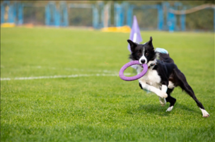
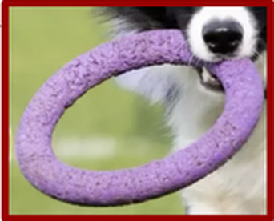
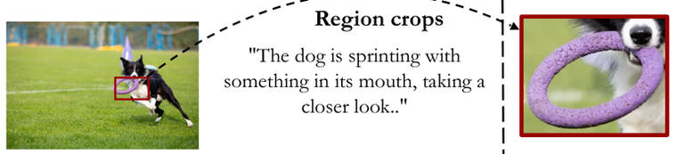
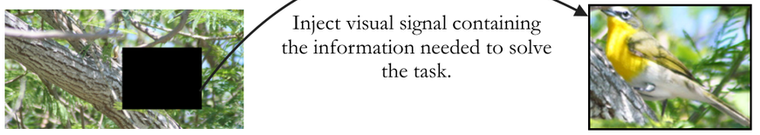
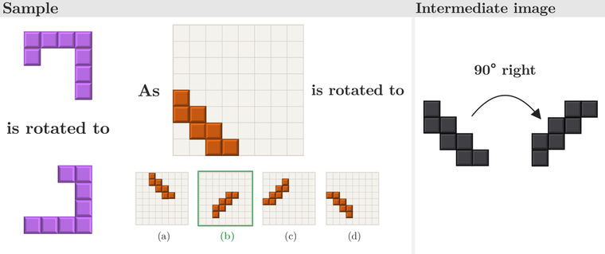

The idea
Let the model think in images, without drawing them
Vision-language models look at an image once and then reason in words.
Latent visual reasoning gives them a second channel: in the middle of a thought, the model can emit a few continuous vectors that act as an abstract visual thought, and carry on.
Watch one answer being generated
- Text token
- Image token
- Latent start / end token
- Latent token: a hidden state fed back in, never turned into a word
The method
LanteRn teaches this in two stages
Ground. Supervised fine-tuning pulls each latent towards the vision encoder's features for the image region the reasoning step is about.
Reinforce. Reinforcement learning then rewards correct answers, so the latents are free to become whatever helps.
Where the latents come from


In training, the model's latents are pulled towards the oracles. At inference there is no box and no oracle: the model has to write its latents on its own.
What each stage buys
Accuracy of a 3B model against its starting point and against a text-only model trained the same way.
- Qwen2.5-VL-3B
- Text-only baseline
- LanteRn, 8 latent tokens
The doubt
Does the answer depend on the latents?
To test whether four recent models actually use their latent thoughts, we swapped them for noise, zeros, or a crop from a different image and checked whether the answers change.
Six models, three benchmarks, same picture
The vertical bar is standard inference. Each mark is the same model with its latent tokens replaced.
- Standard inference
Latent bypass. Off-the-shelf latent visual reasoning models bypass latent tokens, which have little to no causal effect on the model's final answer.
The diagnosis
Two things are holding it back
Latent bypass problem
In most existing datasets, oracle latent tokens provide limited additional information beyond the original image and do not substantially simplify the task. Models learn to ignore them during training and bypass them at inference. On a dataset where the latents do carry the answer, models rely on them.
What the latents contain decides whether the model reads them
LanteRn retrained in three settings. The number is the gap between the right latents and the best useless replacement (noise, zeros or an unrelated image).
A crop of the input

The usual setup. The latents show part of an image the model can already see.
−1 pt
The only view of a masked region

The region that matters is blacked out in the input and kept only in the latents.
+14 pts
A rotation the model must imagine

Tetris-like puzzles. The latents show the rotated shape, which is not in the input.
+56 pts
On Tetris the dashed line is chance (25%). The model reads the right latents well, but its own latents score only 33%: it cannot write what it has learned to read.
Latent representation collapse
The latent tokens produced at inference time deviate from their corresponding oracle representations, collapsing to a narrow region, which prevents any benefit even when the model relies on them: on the rotation puzzles it scores 86% with the oracle latents, but only 33% with its own.
Predicted latents huddle together
Each dot is one sample's latent; the tighter the cloud, the more alike the latents (average cosine similarity on VisCoT, dot positions illustrative).
Method, the per-step similarity curves and the Tetris results are in Section 5 of the paper.
Latent representation collapse. Predicted latent tokens collapse to highly similar representations that are relatively dissimilar to their oracle tokens.
What comes next
What latent visual reasoning needs
Each finding points to one fix. The first two are open research problems; the third is something every paper can do today.
-
Latent bypass
Datasets with steps worth reading
Intermediate images should hold what the input does not: rotations, folds, future states.
A pause-token baseline tells you whether they do. -
Latent collapse
More precise latent prediction
A model that relies on its latents needs good ones at inference.
Watch the similarity among predictions, and between predictions and oracles. - For every new model Test for bypass Swap the latents for dummies and report what happens, as part of every evaluation.
What's holding latent visual reasoning back, in full
Cite
@inproceedings{viveiros2026lantern,
title = {LanteRn: Latent Visual Structured Reasoning},
author = {Viveiros, Andr{\'e} G. and Gon{\c{c}}alves, Nuno and
Lindemann, Matthias and Martins, Andr{\'e} F. T.},
booktitle = {ICLR 2026 Workshop on Multimodal Intelligence},
year = {2026},
eprint = {2603.25629},
archivePrefix = {arXiv}
}@inproceedings{viveiros2026holding,
title = {What's Holding Back Latent Visual Reasoning?},
author = {Viveiros, Andr{\'e} G. and Gon{\c{c}}alves, Nuno and
Martins, Andr{\'e} F. T. and Lindemann, Matthias},
booktitle = {Advances in Neural Information Processing Systems (NeurIPS)},
year = {2026},
eprint = {2605.18445},
archivePrefix = {arXiv}
}